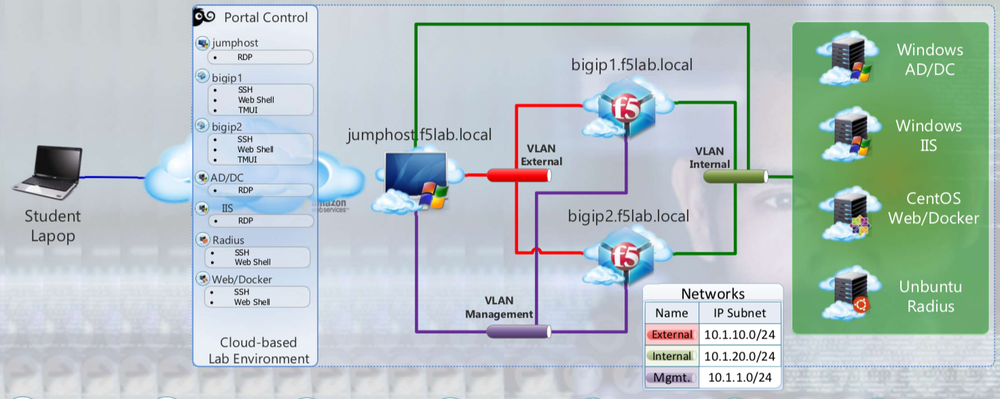

1. Getting Started¶
Please follow the instructions provided by the instructor to start your lab and access your jump host.
To access your dedicated student lab environment, you will require a web browser and Remote Desktop Protocol (RDP) client software. The web browser will be used to access the Lab Training Portal. The RDP client will be used to connect to the Jump Host, where you will be able to access the BIG-IP management interfaces (HTTPS, SSH).
1. Establish an RDP connection to your Jump Host and login with the following credentials: User: user1 Password: user1
- Access the BIG-IP GUI https://10.1.1.4 (you can double-click on the BIG-IP1 bookmark from Chrome).
3. Login into the BIG-IP Configuration Utility with the following credentials: User: admin Password: admin
Note
All work for this lab will be performed exclusively from the Windows jumphost. No installation or interaction with your local system is required.
1.1. Lab Topology¶

The following components have been included in your lab environment:
- 2 x F5 BIG-IP VE (v15.1)
- 1 x Windows Jumphost- Server 2016
- 1 x Windows 2016 Server hosting AD, CA, OCSP & DNS
- 1 x Windows 2016 Server hosting IIS
- 1 x Ubuntu 16.04 LTS
- 1 x Centos 7
1.1.1. Lab Components¶
The following table lists VLANS, IP Addresses and Credentials for all components:
| Component | VLAN/IP Address(es) | Credentials |
|---|---|---|
| jumpbox.f5lab.local |
|
|
| BIG-IP1.f5lab.local |
|
|
| BIG-IP3.f5lab.local |
|
|
| dc.f5lab.local |
|
|
| iis.f5lab.local |
|
|
| web.f5lab.local |
|
|
| radius.f5lab.local |
|